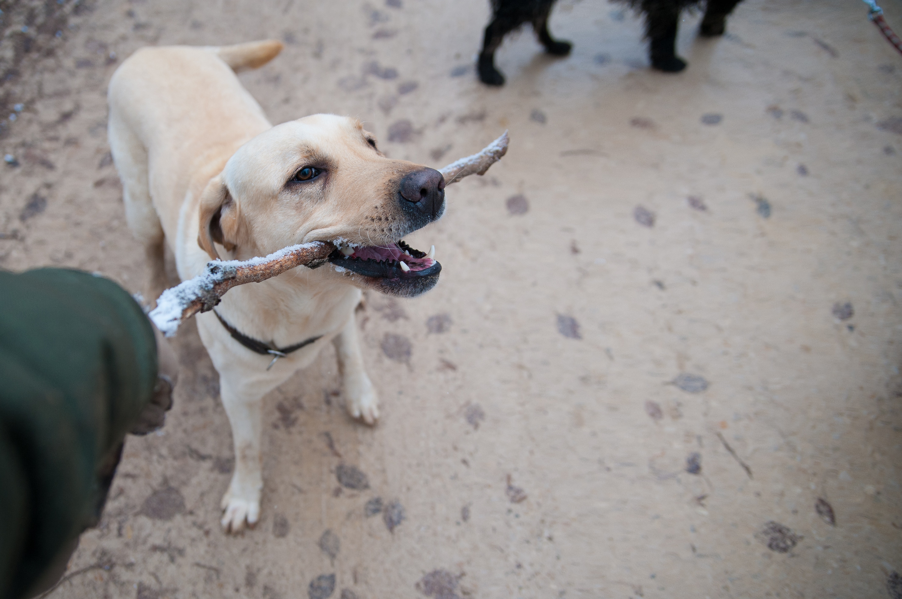

Not all animal shelters are the same. Fortunate homeless and unwanted animals end up in the hundreds of open-admission animal shelters that are staffed by professional, caring people.
At these facilities, frightened animals are reassured, sick and injured animals receive treatment or a peaceful end to their suffering, and the animals’ living quarters are kept clean and dry. Workers at these facilities never turn away needy animals and give careful consideration to each animal’s special emotional and physical needs.

To be able to offer refuge to every animal in need, open-admission shelters must euthanize unadopted and unadoptable animals. The alternative—turning them away—is cruel and leaves the animals in grave danger.